Chủ yếu giải quyết các vấn đề như khó phát hiện lỗi chiều cao trên bề mặt cong trong ảnh độ sâu 3D. Công cụ sẽ chuyển đổi ảnh độ sâu thành ảnh xám, trong ảnh xám làm nổi bật lỗi chiều cao dựa trên chênh lệch mức xám, sau đó sử dụng các thuật toán kiểm tra 2D liên quan để phát hiện lỗi. Hình ảnh hiệu quả xử lý của công cụ trích xuất chiều cao như hình bên dưới.
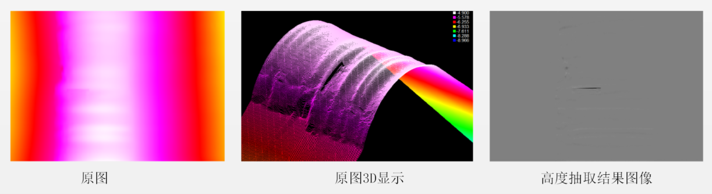
Chủ yếu dùng cho kiểm tra lỗi 3D, ví dụ như ảnh hàn nắp trên —— lỗi lỗ kim, lỗi điểm nổ mép, lỗi mép gợn sóng, v.v.
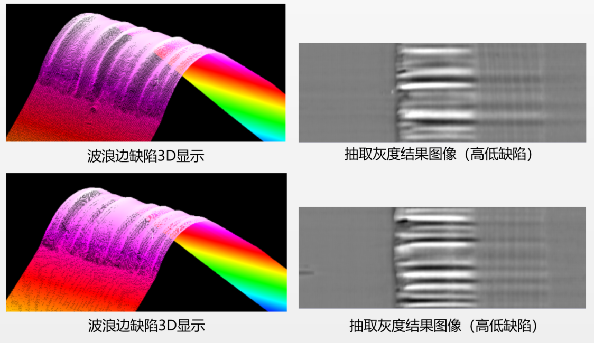
Công cụ chủ yếu thiết lập các tham số như hướng trích xuất, đối tượng trích xuất, kích thước trích xuất và gain, thông qua việc tạo bề mặt tự do đã loại bỏ thành phần tần số cao（thành phần sóng hài）từ ảnh đầu vào làm mặt chuẩn, lấy chênh lệch chiều cao giữa bề mặt tự do và ảnh độ sâu rồi chuyển đổi thành ảnh xám, từ đó làm nổi bật sai lệch chiều cao trong ảnh độ sâu dựa trên độ lệch mức xám. Sơ đồ nguyên lý trích xuất chiều cao như hình bên dưới.
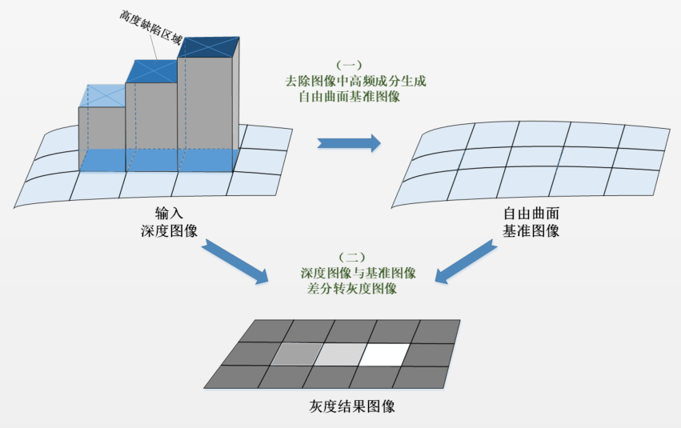
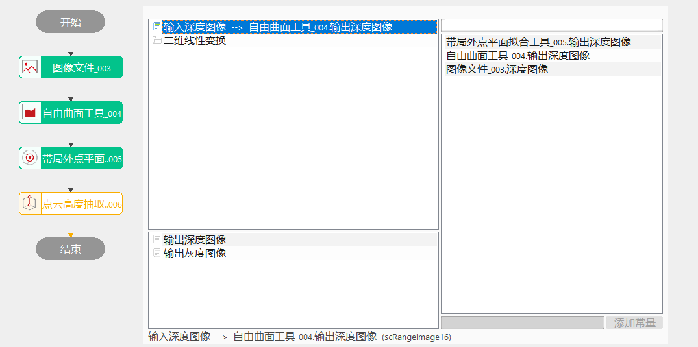
Loại mặt phẳng là ảnh chuẩn
Step 1 Đầu vào chuỗi dữ liệu ảnh bề mặt tự do được liên kết với ảnh độ sâu đầu ra của công cụ bề mặt tự do
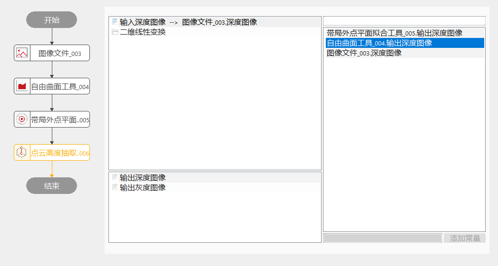
Step 2 Mở giao diện nâng cao, thiết lập tham số chuyển đổi và thiết lập vùng
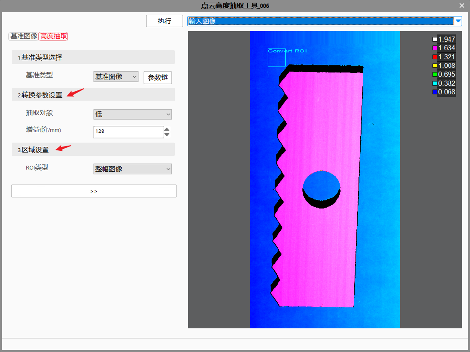
Loại mặt phẳng là mặt phẳng chuẩn
Step 1 Đầu vào chuỗi dữ liệu mặt phẳng chuẩn được liên kết với mặt phẳng sau fitting của công cụ fitting mặt phẳng
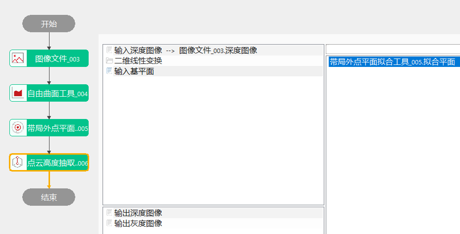
Step 2 Mở giao diện nâng cao, thiết lập tham số chuyển đổi và thiết lập vùng
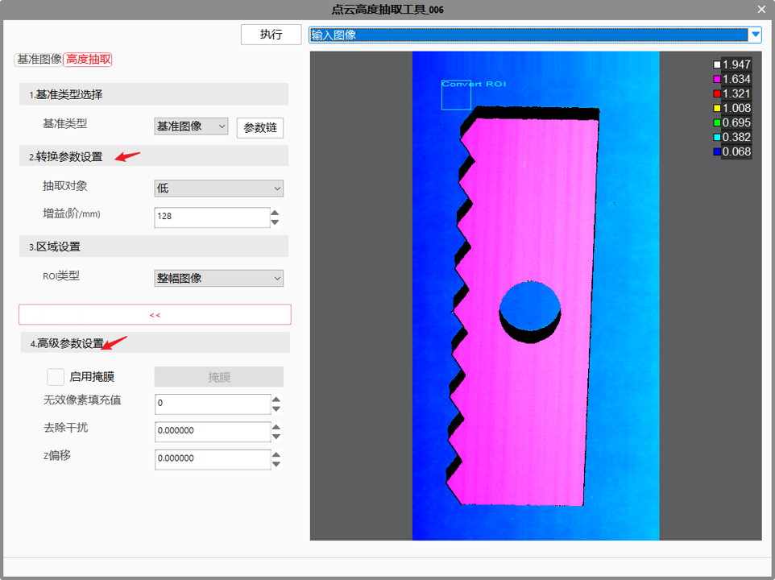
Đối tượng trích xuất
Đối với bề mặt trích xuất, chọn đối tượng chiều cao cần trích xuất, bao gồm đối tượng cao, thấp và cao-thấp. Đối tượng cao: biểu thị chỉ trích xuất dữ liệu cao hơn bề mặt tự do và chuyển đổi thành giá trị xám, giá trị xám của bề mặt trích xuất được đặt là 0；Đối tượng thấp: biểu thị chỉ trích xuất dữ liệu thấp hơn bề mặt tự do và chuyển đổi thành giá trị xám, giá trị xám của bề mặt trích xuất được đặt là 255；Đối tượng cao-thấp: lấy bề mặt trích xuất làm tâm, chuyển đổi dữ liệu ở hai phía cao và thấp so với bề mặt tự do thành giá trị xám, giá trị xám của bề mặt trích xuất được đặt là 128。
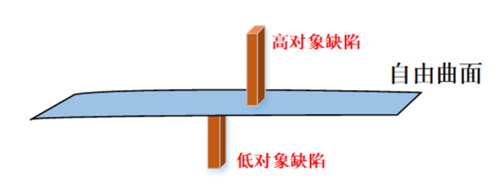
Gain
Chỉ đại lượng vật lý thực tế của giá trị chiều cao tương ứng với một mức xám. Gain đặt càng nhỏ thì càng có thể làm nổi bật sai lệch mức xám của lỗi chiều cao, nhưng cũng có thể kiểm nhầm vùng không lỗi, đơn vị: mm。
Giá trị điền cho pixel không hợp lệ
Giá trị dùng để điền cho pixel trong ảnh xám tương ứng với pixel không hợp lệ trong ảnh độ sâu, phạm vi là [0,255]。
Loại bỏ nhiễu
Xem chiều cao trích xuất nhỏ hơn phạm vi chỉ định là nhiễu và loại bỏ, đơn vị mm。
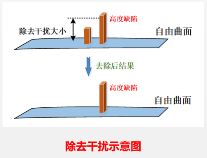
Dịch chuyển Z
Đối với bề mặt trích xuất, thiết lập giá trị dịch chuyển theo hướng trục Z, đơn vị mm。
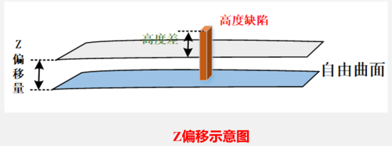
| Mô tả hiện tượng | Cách xử lý |
|---|---|
| Hiệu quả trích xuất không đạt yêu cầu mong muốn | Điều chỉnh tham số chuyển đổi, chủ yếu là điều chỉnh hai tham số đối tượng trích xuất và gain； |
| Tên tham số | Mô tả tham số |
|---|---|
| Loại chuẩn | Chia thành 2 loại: mặt phẳng chuẩn và ảnh chuẩn. |
| Loại ROI | Vùng cần kiểm tra, chia thành 8 loại: toàn bộ ảnh, hình chữ nhật, hình chữ nhật affine, hình tròn, vòng tròn, hình elip, đa giác, nhiều hình chữ nhật affine. |
| Số lượng ROI hình chữ nhật affine | Số lượng hình chữ nhật affine. |
| Đối tượng trích xuất | Chọn đối tượng chiều cao cần trích xuất, bao gồm đối tượng cao, thấp và cao-thấp. |
| Gain | Biểu thị giá trị vật lý chiều cao tương ứng với một mức xám, đơn vị: mm. |
| Giá trị điền cho pixel không hợp lệ | Thiết lập giá trị xám tương ứng với pixel bị thiếu trong ảnh độ sâu. |
| Loại bỏ nhiễu | Xem giá trị chiều cao nhỏ hơn giá trị loại bỏ nhiễu là nhiễu và loại bỏ, đơn vị: mm）。 |
| Dịch chuyển Z | Giá trị dịch chuyển theo hướng trục Z của bề mặt trích xuất, đơn vị: mm. |
| Tên tham số | Mô tả tham số |
|---|---|
| Ảnh xám đầu ra | Xuất ảnh độ sâu bề mặt tự do. |
| Ảnh xám đầu ra | Xuất ảnh xám đã trích xuất. |
| Kết quả thực thi | Kết quả thực thi của công cụ |
| Thời gian thực thi | Thời gian thực thi của công cụ |
参见“\Samples\3D\深度图\点云高度抽取工具.gvp”。